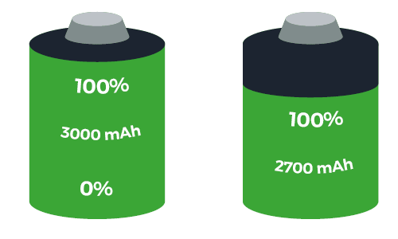
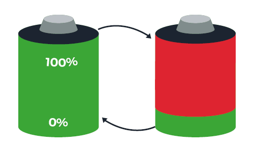
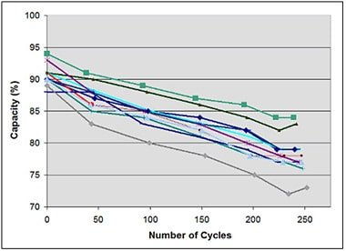

User terminals: the high environmental impact of the manufacturing phase
User terminals are now the biggest contributors to the environmental impact of digital technology and this phenomenon is set to increase. This trend is mainly explained by the increasingly important equipment of households with smartphones, by a reduced lifespan of this equipment, and by the fact that it has a significant environmental impact. An impact mainly due to the smartphone manufacturing phase. The Ericson brand announces, for instance, an impact in use (i.e. linked to recharging the smartphone battery with energy) of 7 kg eqCO2 out of a total impact of 57 kg eqCO2, or only 12% of the total impact. The total impact takes into account the different phases of the smartphone life cycle: manufacture, distribution, use, treatment of the smartphone at the end of its life.
Hence the interest that manufacturers work on this embodied energy by eco-designing but also by improving the possibility of increasing the life of the equipment through repairability but also durability.
Regarding all these observations, it could seem unproductive from an environmental point of view to reduce the energy consumption of smartphones. In any case, the simplistic approach would be to put that impact aside. But the reality is quite different and the electrical flows that are involved in the use of mobile devices are much more complex than one might think.
Explanation of battery operation
Current smartphones are powered by batteries with Lithium-ion technology. On average, the capacities of the batteries on the market are 3000 mAh. The trend is to increase this capacity. The battery can be thought of as consumable, just like a printer cartridge. It wears out over time and the original capacity you had when you bought the smartphone is no longer fully available. That is, the 100% indicated by the phone no longer corresponds to 3000 mAh but to a lower capacity. And this initial capacity cannot then be recovered.

Battery wear is primarily created by a full charge and discharge cycles. A recharge/discharge cycle corresponds to an empty battery that would be recharged to 100%. I leave home in the morning with a phone 100% charged, the battery drains, I charge my phone 100% in the evening. A complete cycle in one day therefore!
If you charge your phone more often, you can cycle more (several incomplete cycles are ultimately equivalent to one complete cycle).

The more the number of cycles increases, the more the remaining capacity decreases. This wear leads to the end of battery life. Current technologies allow up to 500 cycles.

At the end of the cycle, the battery capacity is only 70% of the initial capacity. Beyond this annoying loss of autonomy, the battery suffers from certain anomalies, such as a rapid drop from a battery level from 10% to 0%.
Note that this effect will be reinforced by the intensity of the battery discharge: if the phone consumes a lot (for example during video playback), then the battery wear will be greater.
Impact on obsolescence
The loss of autonomy is a cause of renewal by users: 39% in 2018. This phenomenon is reinforced by the fact that the batteries are increasingly non-removable, which leads to a complete replacement of the smartphone by the user. In addition, even if the decrease in autonomy is not the only replacement criterion, it will be added to the other causes to create a set of signs indicating to the user that he must change his smartphone (marketing effect, power, new features…).
We can therefore easily make the link between the mAh consumed by the applications and the kg of CO2 due to the production of CO2. By reducing these mAhs, we would greatly reduce the wear of the battery, the life of smartphones would be extended on average and therefore the initial CO2 cost would be more profitable. The smartphone mAh has a much greater cost on the embodied energy of the smartphone (manufacture) than on the impact of energy to recharge it.
For example, for a classic smartphone, we have 0.22 mgCo2 / mAh for the recharged energy compared to 14mgCo2 / mAh.
Technological solution
Solving this problem can always be seen through the technological axis: increase in capacities, fast loading … If we take the case of fast loading, this will not change the problem, on the contrary, it will worsen its potentially increasing cycles. It is not by increasing the fuel tank of cars that we will reduce the impact of the automobile. Improving battery technology is beneficial, however, reducing the consumption of smartphones would be even more beneficial for the environment and the user.
Note that the CO2 impact is not only to be taken, indeed the manufacture of batteries is overall very expensive in environmental and social terms. Not to mention strategic resources with geopolitical impacts such as cobalt or lithium. Extending battery life is critical.